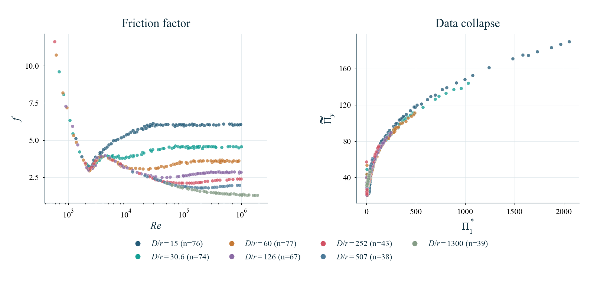

Goldenfeld’s roughness-induced criticality in pipe flow

Numerical results
| Scope | Samples | Groups | MI | ε | Test R² |
|---|---|---|---|---|---|
| Global | 414 | 1 | 1.803 | 0.165 | 0.929 |
Selected relations
Global
Input 1(rho0.75 · U0.75 · r) / (mu0.75 · D0.25)
Outputcf · [(rho0.25 · D0.25 · U0.25) / (mu0.25)]